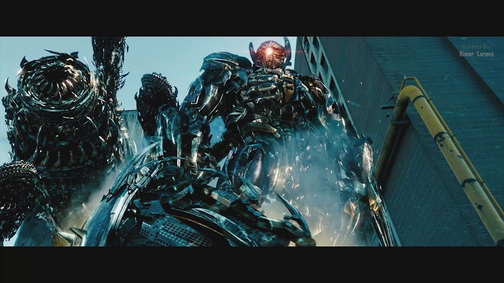
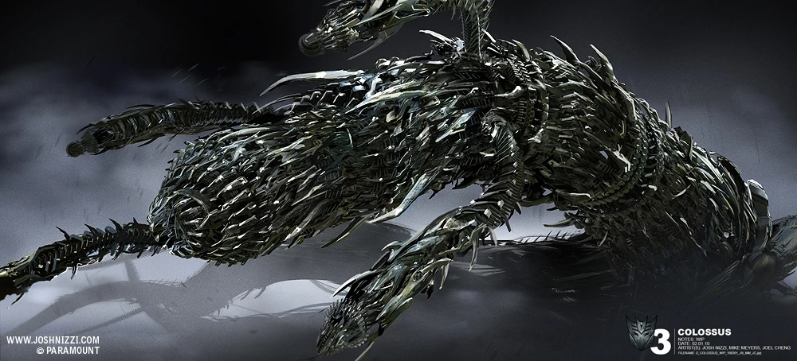

Shockwave đã được Megatron để lại để theo dõi Cybertron từ lâu, nhưng cuối cùng anh ta sẽ đi theo tiếng gọi của AllSpark đến Trái đất . Hiệu quả chết người với sự tận tâm lạnh lùng với logic, Shockwave là một cỗ máy giết người giống như một số cỗ máy khác và là một trong số rất ít có thể cạnh tranh với Megatron. Điều này đã khiến anh ta trở nên khá nổi tiếng trong số các Decepticons; một số tôn trọng anh ta đủ để sẵn sàng làm việc với anh ta trong khi những người khác thần tượng anh ta đến mức trả thù cho cái chết của anh ta. Tuy nhiên, Shockwave đã sẵn sàng và sẵn sàng tiêu diệt bất kỳ Autobot nào dám cản đường anh ta bằng Pháo AstroMag gắn trên cánh tay của anh ta .

Shockwave và con vật cưng của anh ta là Driller đã tấn công các Autobot khi chúng được triệu tập đến Chernobyl bởi đặc vụ Decepticon Alexi Voskhod . Điều này được thực hiện như một hành động đánh lạc hướng để đảm bảo rằng các Autobots không nhận ra rằng Decepticons thực sự muốn họ tìm thấy pin nhiên liệu từ Ark nằm trong cơ sở. Sau khi Optimus lấy được pin nhiên liệu từ Driller, Shockwave xuất hiện từ đó để tiết lộ bản thân với Optimus, và cả hai nhanh chóng rút lui xuống lòng đất, khiến Optimus rất lo lắng khi nhìn thấy Shockwave trên Trái đất.
Sau đó, Shockwave tham gia vào cuộc xâm lược Chicago . Anh ta và Driller xuất hiện từ bên dưới đoàn xe Autobots, và Driller đã tách Optimus khỏi xe kéo của anh ta. Shockwave rời Driller và tiếp tục truy tìm Autobots. Các Wreckers được cử đến để đánh lạc hướng anh ta, bắn vào áo giáp của anh ta bằng súng máy của họ. Anh ta dùng một chiếc ô tô làm lá chắn và bắn vào họ, và khi họ lái xe đi, anh ta bắt đầu truy đuổi họ trên đường một cách đe dọa, bỏ lỡ hai Autobot nhỏ, Wheelie và Brains , những người đã nhanh chóng bỏ chạy.

Anh ấy sớm tham gia Soundwave và Barricade để tập hợp các Autobot khác. Brains và Wheelie đã ngăn chặn các Decepticons tiếp tục hành quyết các tù nhân của họ bằng cách kiểm soát một chiếc máy bay chiến đấu của Decepticon và thả các chiến binh xuống chiến trường. Shockwave rút lui xa hơn cùng với Barricade và một số Decepticons khác, nhưng những người lính loài người đã đặt bẫy và bắn vào họ. Khuôn mặt của Shockwave bị che khuất bởi một trong những chiếc dù của họ, và mắt của anh ta sau đó bị Wreckers bắn ra, khiến nó bị treo lủng lẳng bởi dây của nó. Sau đó, anh ta cố gắng trốn thoát, nhưng Optimus Prime đã quay trở lại trận chiến, và khi Shockwave bắn vào anh ta, Autobot đã né được phát súng, đeo một bộ gai đốt ngón tay ., và đấm Shockwave mạnh đến nỗi một phần bụng của anh ta vỡ tan. Ngay cả điều này cũng không khiến Shockwave gục ngã, nhưng Prime vẫn không bỏ cuộc - anh ta đấm Shockwave một lần nữa, đè Decepticon xuống và xé toạc con mắt lủng lẳng của hắn qua cổ họng, cuối cùng giết chết Decepticon khát máu. Optimus sau đó đã sử dụng pháo của Shockwave để bắn phá trụ điều khiển được thiết lập trong thành phố.